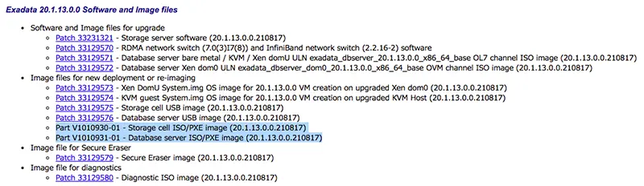
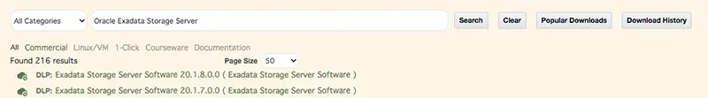

Exadata NFS ReImage
Прошлая статья потеряла актуальность вследствие ее сложности. Есть более простой и быстрый способ ReImage. Этот вариант подходит для UEFI-систем. На более ранних комплексах я его не пробовал так как сейчас их уже почти не осталось.
Note
Exadata X2-X6 - BIOS-Based System
Exadata X7-X8 - UEFI-Based System
Note
- Для проведения re-image нам потребуется:
Профиль OEDA, приготовленный в Linux
Сервер с Linux
NFS Server
DHCP Server
Этап I. Подготовка профиля
Нужно подготовить профиль инсталляции в OEDA (Oracle Exadata Deployment Assistant). Для подготовки нужно использовать только Linux версию. Это важный момент! Без этого работать будет, но все же, для 100% совместимости лучше брать Linux версию. Скачать OEDA можно на сайте support.oracle.com.
После завершения описания конфигурации в OEDA вы получите zip-архив. Внутри вы найдете файл …-preconf.csv. Этот файл нужно будет переименовать в preconf.csv
Этап II. Скачивание дистрибутивов
Смотрим требования к версии image в ТЗ, после чего смотрим документ Doc ID 888828.1 на сайте support.oracle.com. В этом документе находим нужную нам версию image и в правом столбце жмем ссылку напротив нужного нам релиза (Supplemental README …). В открывшемся README нужно найти секцию ‘Software and Image files’ в которой описаны все необходимые файлы которые понадобятся для скачивания.
{kind=link}
Теперь идем на сайт edelivery.oracle.com и в строке поиска набираем ‘Oracle Exadata Storage Server’, после чего кликаем на нужную нам версию. В верхнем правом углу нажимаем ‘Checkout’ и ‘Continue’, после чего соглашаемся с лицензией и снова ‘Continue’. Проверяем что нам предлагают скачивать те же файлы что мы видели ранее. Скачиваем.
{kind=link}
После того как оба файла скачали - распаковываем. Вам понадобятся 2 файла с образами ОС:
compute…x86_64.iso
cell…x86_64.iso
Этап III. Настройка сервера инсталляции
В этом шаге нужно настроить DHCP Server и NFS Server. Я делаю это на примере RHEL, но дистрибутив может быть любым.
Установка необходимых пакетов
yum install dhcp nfs-utils rpcbind vim
Отключение firewall
systemctl stop firewalld
systemctl disable firewalld
systemctl mask --now firewalld
Отключаем SELinux
Для этого в файле /etc/selinux/config изменяем директиву SELINUX=enforcing на SELINUX=disabled, после чего перезагружаемся.
Настройка NFS сервера
systemctl enable nfs-server
systemctl enable rpcbind
mkdir -p /export
echo "/export *(ro,sync,no_root_squash)" >> /etc/exports
systemctl restart rpcbind
systemctl restart nfs-server
systemctl status nfs
showmount -e
rpcinfo -p
Tip
NFS debug enable: rpcdebug -m nfsd all
NFS debug disable: rpcdebug -m nfsd -c all
Настройка DHCP сервера
Создаем файл конфигурации /etc/dhcp/dhcpd.conf. В прошлой версии статьи я добавлял каждый сервер вручную, но сейчас отказался от этого, так как это долго. Я разрешил dhcpd раздавать адреса всем подряд. Это удобно в том случае если у вас изолированный сегмент сети (например стойка не подключена к сети заказчика). Если же вы делаете перезаливку только одного сервера, то лучше в явном виде перечислять хосты которые получат адрес и какой именно. (параметр ‘allow unknown-clients’ нужно изменить на ‘deny unknown-clients’).
# ------------------------------------------------------------------------------
# DHCP Server Configuration file.
# see /usr/share/doc/dhcp*/dhcpd.conf.example
# see dhcpd.conf(5) man page
# ------------------------------------------------------------------------------
#################################### MAC ADDRESS ######################################
# Note: #
# The eth0 MAC address is the 'fru_macaddress' field from /SYS/MB/NET0 in the ILOM #
# or /SYS/SMOD0/MB/NET0 or /SYS/SMOD/MB/NET0 #
# or #
# Run 'ibhosts' to get a list of node names and IP addresses if use InfiniBand #
#######################################################################################
# ------------------------------------------------------------------------------
# - Global options
# ------------------------------------------------------------------------------
allow unknown-clients;
not authoritative;
allow bootp;
allow booting;
option ip-forwarding false; # No IP forwarding
option mask-supplier false; # Don't respond to ICMP Mask req
default-lease-time 14400;
max-lease-time 28800;
# ------------------------------------------------------------------------------
# - Subnet Section
# ------------------------------------------------------------------------------
subnet 192.168.1.0 netmask 255.255.255.0 {
option subnet-mask 255.255.255.0;
option routers 192.168.1.254; # My laptop IP (InstallServer)
option domain-name "evil.corp";
range 192.168.1.40 192.168.1.199;
next-server 192.168.1.254;
option root-path "192.168.1.254:/tftpboot/linux-install";
}
# ------------------------------------------------------------------------------
# - Clean DHCP Server leases
# ------------------------------------------------------------------------------
#
# 1. service dhcpd stop
# 2. rm -f /var/lib/dhcpd/dhcpd.leases~
# 3. rm -f /var/lib/dhcpd/dhcpd.leases
# 3. touch /var/lib/dhcpd/dhcpd.leases
# 4. service dhcpd start
#
group {
next-server 10.64.75.254;
option root-path "10.64.75.254:/tftpboot/linux-install";
host db01 {
hardware ethernet 6a:ee:0b:de:fc:f5;
fixed-address 192.168.1.40;
}
}
# ------------------------------------------------------------------------------
# .END FILE.
# ------------------------------------------------------------------------------
На всякий случай проверяем, что в файле конфигурации нет ошибок
dhcpd -t -cf /etc/dhcp/dhcpd.conf
Перезапускаем DHCP Server
systemctl enable dhcpd.service
systemctl restart dhcpd.service
systemctl status dhcpd.service
Этап IV. Заполнение профиля
Чтобы инсталлятор мог использовать профиль, его нужно дозаполнить.
Для этого нужно поочередно зайти на ILOM каждого сервера и выполнить команду show /SYS/MB/NET0 или /SYS/SMOD0/MB/NET0 или show /SYS/SMOD/MB/NET0 (зависит от модели серера) и ищем mac в строке fru_macaddress или командой ibhosts, если вдруг будете ставить через Infiniband.
После того как вы получили mac-адрес интерфейса, его необходимо вписать в файл preconf.csv. Сделать это нужно между запятыми, после слова “Management” и перед указанием IP-адреса для нужного сервера (пример готового файла).
... bondeth0,eth0::::,Management,<mac:address:paste:here>,10.152.240.159,255.255.252.0 ...
После того как mac-адреса для всех серверов будут заполнны, файл необходимо положить рядом с iso-файлом. (например ‘/export/preconf.csv’)
Attention
Будьте внимательны со строками которые заполняете. Файл нельзя редактировать через EXCEL – используйте текстовый редактор.
Этап V. Инсталляция
Настраиваем статический ip-адрес или dhcp в ILOM каждого сервера. Адрес должен быть в одной сети с NFS-сервером.
cd /SP/network
set pendingipdiscovery=dhcp
set commitpending=true
или
cd /SP/network
set pendingipdiscovery=static
set pendingipaddress=192.168.1.10
set pendingipnetmask=255.255.255.0
set pendingipgateway=192.168.1.1254
set commitpending=true
В ILOM нужно примонтировать iso-образ в зависимости от типа сервера и указать серверу загрузиться с cdrom.
set /SP/services/kvms/host_storage_device/remote/ server_URI=nfs://192.168.1.254:/export/compute.iso
set /SP/services/kvms/host_storage_device/remote/ server_URI=nfs://192.168.1.254:/export/cell.iso
set /SP/services/kvms/host_storage_device/ mode=remote
set /HOST boot_device=cdrom
start /SYS
start /SP/console
start /HOST/console
Сервер загрузится c виртуального cdrom’a, получит ip-адрес от dhcp-сервера, сам найдет профиль и начнет инсталляцию. Если потребуется, сервер сам обновит нужные микрокоды, перезагрузится и т.д. - следите за логами на экране.
В конечном итоге запустится тест и после его прохождения сервер напишет о том что установка закончена.
2020-03-10 15:50:44 +0300 2020-03-10 15:50:44 +0300 [FACTORY_TEST_END] Post installation tests ended with success
2020-03-10 15:50:44 +0300 2020-03-10 15:50:44 +0300 [FACTORY_COMPLETE] Imaging ended with success
Со STORAGE-серверами у меня было так что последняя проверка проходила неудачно и тогда сервер писал вот так:
2020-03-10 15:34:50 +0300 The first boot completed with FAILURE
2020-03-10 15:34:50 +0300 2020-03-10 15:34:50 +0300 [FACTORY_ERROR] Overall status failure
2020-03-10 15:34:50 +0300 2020-03-10 15:34:50 +0300 [FACTORY_TEST_END] Post installation tests ended with failure
2020-03-10 15:34:50 +0300 2020-03-10 15:34:50 +0300 [FACTORY_COMPLETE] Imaging ended with failure
Перезагружаем сервер – shutdown -r now. После перезагрузки сервер через некоторое время еще раз запустит все необходимые проверки и напишет что все OK.
Далее можно переходить к установке БД, настройке GRID и ASM. Возможно я опишу этот процесс в дальнейшем, но пока остановимся на этом.
Note
- Скрипты, которые запускает сервер для своих проверок:
Command line is
/opt/oracle.cellos/validations/bin/vldrun.pl -quiet -allCommand line is
/opt/oracle.cellos/validations/bin/vldrun.pl -mode first_boot -force -quiet -all
Для автоматизации получения mac-адресов с большого количества серверов можно внести адреса их ilom в файл servers.lst, после чего выполнить скрипт который запишет mac-адреса в файл mac_adr.txt.
for h in `cat servers.lst`; do
echo $h >> mac_adr.txt
ssh -oStrictHostKeyChecking=no $h 'ipmitool sunoem cli "show /SYS/SMOD0/MB/NET0"' | grep "fru_macaddress" >> mac_adr.txt
ssh -oStrictHostKeyChecking=no $h 'ipmitool sunoem cli "show /SYS/MB/NET0"' | grep "fru_macaddress" >> mac_adr.txt
done